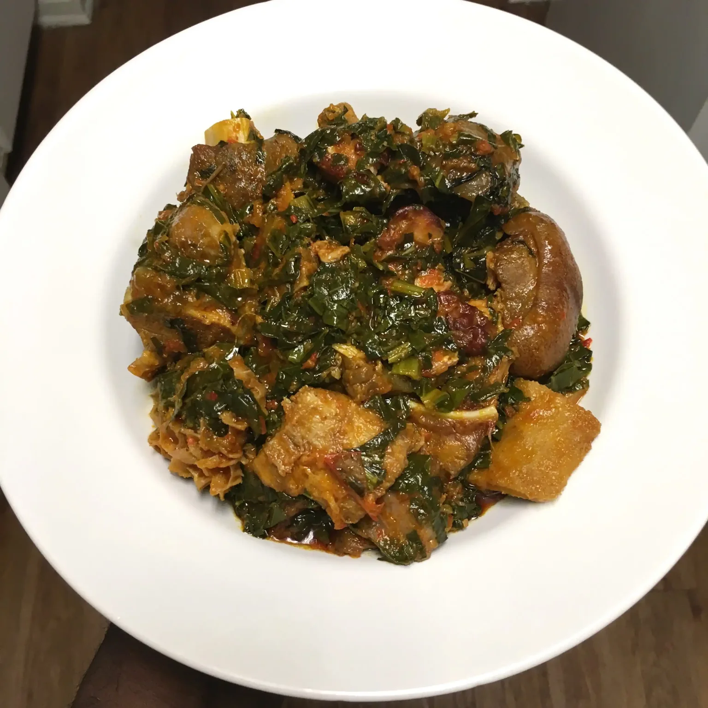

Efo Riro

A Yoruba Vegitable delicacy
Efo riro is a vegetable soup and a native soup of the Yoruba people of South West Nigeria and other parts of
Yorubaland.
The two vegetables most commonly used to prepare the soup are Celosia argentea and Amaranthus hybridus. The
history of Efo riro is deeply rooted in the Yoruba culture.
RECIPE
Ingredients
- 1.5 Onions
- 3 Maggi Cubes
- 2 Red Habaneros
- 7 Red Bell Peppers
- 3 Cooking Spoons of Palm Oil
- 3 Bunches of Mustard Greens
- Smoked fish
- Smoked Turkey
- Shaki (Tripe)
- Goat Meat
- Ponmo (Cow Skin)
Procedure
- Roll up your sleeves and pray to the Efo Riro gods to give you a good process.
- Wash all of your meats and season with salt, Cameroon pepper, scotch bonnet, an onion bulb, two cloves of
garlic and two Maggi cubes. Add about two cups of water and cook till desired softness. Don’t finish it all
in the name of tasting to see if it is cooked.
- To make a thick pepper paste, blend the peppers and onions with no water at all! (Please make sure you are
using a strong blender). Pour this mix into a pot and boil till the water in it has evaporated. Cooking tip;
when all of the water is out, you will see holes in the mix.
- In a pot, pour three cooking spoons of palm oil and heat it. Toss in some chopped up onions and pour in the
reduced thick pepper paste you just boiled.
- Cook the mixture from above for five minutes, leaving the pot open (this is to let out as much moisture as
possible) then add all your cooked meats to the pepper mix, stir it properly and let this cook for four
minutes.
- Grab your mustard greens, this was my first time using mustard greens (I think they are collard greens
cousins). Cut them up as finely or roughly as you want. And add this to the stew and meat cooking.
- All this point you want to make sure the ratio of vegetables to pepper sauce is perfect, not too wet or
soggy.
- Turn off the heat after two minutes so as not to overcook the vegetables. Premium Efo Riro.